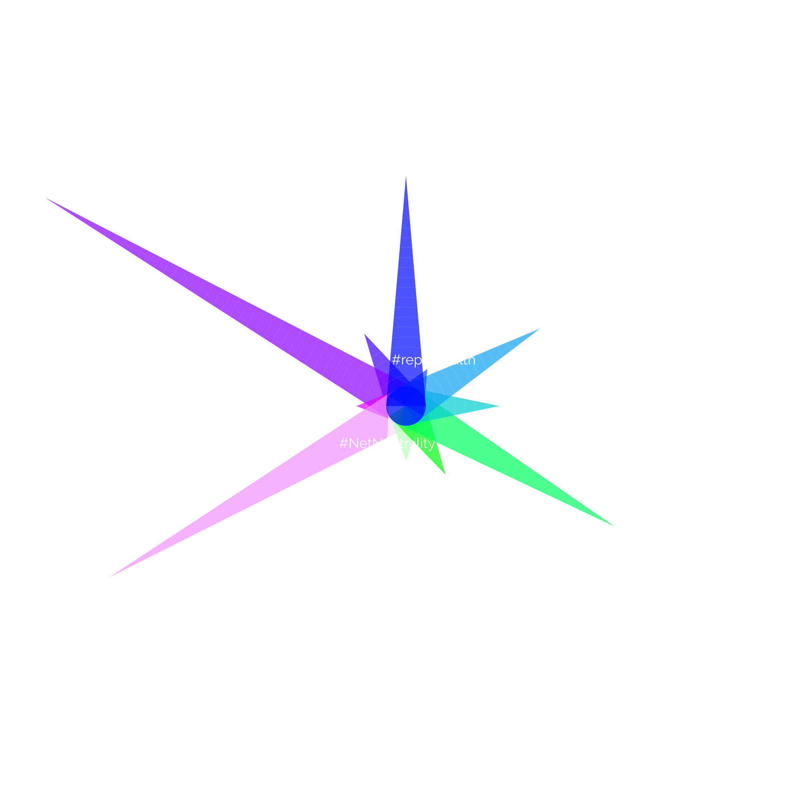

In his first 100 days in office President Trump has threatened to and taken legislative action against an overwhelming number of historically progressive equality movements. He has tightened border control and attempted to restrict immigration, is currently working to defund the EPA and environmental agencies, and appointed a head of the FCC who is against Net Neutrality. He is currently working to repeal Obamacare, and has politically cleared the path for the Dakota Access Pipeline. His supporters have been emboldened by his anti-politically correct rhetoric, and hate crimes against Muslims, Jews, people of color, and members of the lgbtq+ community have increased. As many have commented, the effect is overwhelming. Donald Trump has seemingly waged an all-out assault on liberal politics in what we are coming to understand is a culture war that is equal parts economic, political, and literal.
While the left is far from helpless, this assault has been overwhelming and demoralizing for many. With so many rights in danger, so many people affected, how does one fight back? A phrase that has hung in my mind is: the battle must be fought on all fronts. For every attack on human rights, community/consumer protections, and public safety nets there must be a parry. But in order to do so activists and organizers must find a way to build effective coalitions that are agile and coordinated in responding to President Trump’s actions.
A crucial step in building such coalitions is accurately diagnosing collective political energy at any given point in time. As the election has so clearly demonstrated, social media echochambers and filter bubbles have deteriorated our ability as individuals to accurately judge political sentiment of the nation as a whole. What is loud and clear to one person could be completely invisible to another. This makes it harder for activists to get an accurate sense of which causes are gathering momentum, which are at risk of being forgotten, and which are being drown out in a tide of conservative social resistance.
Because a central issue in the political climate is psychological (that is, fatigue, activism burnout, and demoralization), tools that measure and make sense of the nation’s collective psychological status are crucial. Twitter in particular has become a central site of political action with the President’s prolific tweeting habits, and with its capacity for fast-moving information dissemination. Through quantitatively measuring activity on Twitter, one can gain an objective understanding of the relative attention being paid to different activist causes. And by cutting across filter bubbles, one is empowered to make better-informed tactical decisions.
This project functions as a kind of prototype model of a tool to measure collective national attention on Twitter. Through measuring daily unique tweets with prominent hashtags(1) for twelve different progressive movements I gained a single numeric value representing collective energy behind each. Then averaged over a single week,(2) I placed each movement’s daily tweet average in relation to each other. The result is a snapshot image of the collective attention of progressive causes over the given week. With a single glance, one can tell which cultural “battles” are being fought, how strong they are, and what the rallying points are.
AVERAGE DAILY UNIQUE TWEETS BY HASHTAG
Each ring represents 100 unique tweets per day
-
Black Lives Matter
#BlackLivesMatter
2,143/day
-
Reproductive Health
#reprohealth
214/day
-
Immigration Reform
#NoBanNoWall
1,386/day
-
Affordable Healthcare
#SaveACA
746/day
-
Transgender Rights & Visibility
#transgender
2,229/day
-
Dakota Access Pipeline at Standing Rock Reservation
#StandingRock
600/day
-
Fight for 15
#Fightfor15
357/day
-
Internet Neutrality
#NetNeutrality
164/day
-
Environmentalism
#climatechange
3,257/day
-
Violence Against Women
#domesticviolence
300/day
-
LGBTQ+ Rights & Visibility
#lgbt
3,929/day
-
Gun Violence
#gunsense
643/day
An ideal version of such a tool would require several layers of improvement, the most important of which would be calculating hashtag use live and updating directly to the web. A better version would also take into consideration a larger number of hashtags used for a single movement (for example #BLM in addition to #BlackLivesMatter). Along the same lines, it should be flexible in its ability to add new causes, and hide those that are effectively dormant.
While far from perfect, this project was a valuable exercise in discovering and working with social media analysis tools, and designing effective ways to graphically describe activist organization in the current climate. Although still bound by the biases and limitations of Twitter as a platform, it demonstrates valuable insights about collectivist activist attention. I hope additional tools that empower and inform organizers about the data-rich social media sphere continue to appear to help make sense of this historic political moment in real time.